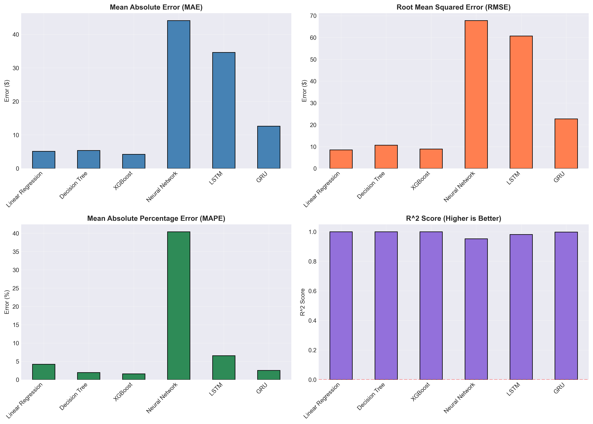
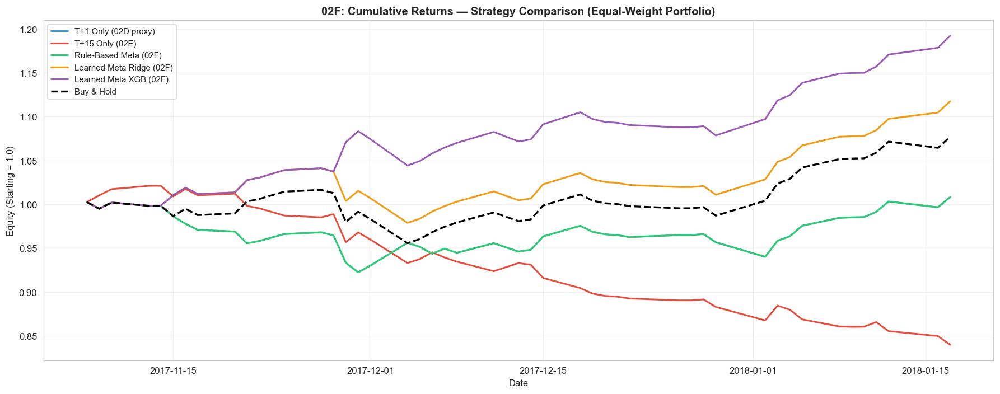
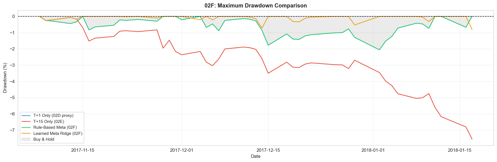
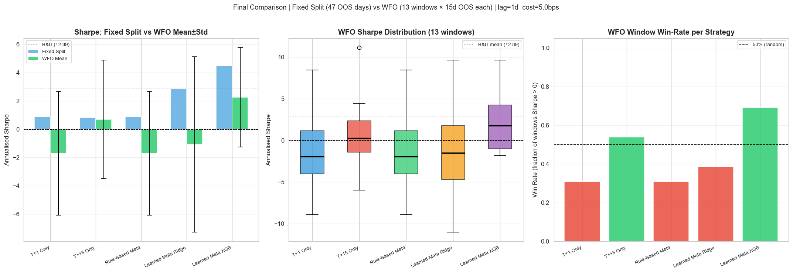
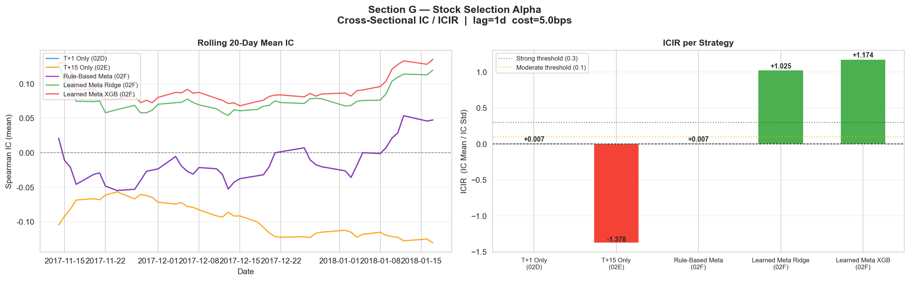

This report summarizes a production-oriented machine-learning alpha framework that combines cluster-aware equity modelling with sentiment-driven residual correction and multi-horizon signal governance. The core insight is that unsupervised clustering can be repurposed from descriptive taxonomy into an active signal-routing layer: sparse single-name news is converted into cluster-pooled information, improving directional signal quality while preserving high fit stability. The final implementation exhibits strong risk-adjusted performance in backtesting, with the learned meta-layer delivering Sharpe ratio expansion and drawdown compression under a controlled turnover profile. Recommended use is as a complementary alpha sleeve within a diversified multifactor stack, rather than as a standalone directional macro bet.
We propose an ML-driven alpha signal designed for integration into an institutional multifactor equity process. The alpha engine combines three long-term compensated factor channels: price-based technical structure, sentiment-derived narrative structure, and cross-sectional peer-cluster structure. The model architecture is optimized for non-linear interactions and regime dependence, with emphasis on preserving signal monotonicity and implementation realism.
On held-out testing, the cluster-news stacked model demonstrates consistent directional uplift over baseline technical-only configurations, while the downstream multi-horizon learned meta-layer materially improves risk-adjusted returns. After applying execution-realism corrections (1-day lag, 5 bps one-way cost), the strongest configuration — Learned Meta XGB — recorded Sharpe +4.45 versus Buy & Hold +6.12, Max Drawdown −1.40%, Total Return +6.13%, and Directional Hit Ratio 60.9%. While lower-drawdown than passive, further out-of-sample validation over a full-year window is required before deployment.
The feature stack combines market microstructure variables (price, volatility, volume), cross-sectional cluster structure, and sentiment features (direct and peer-cluster pooled). This combination is designed to capture both short-horizon technical dynamics and information diffusion effects under sparse single-name news coverage.
All sentiment features are lagged prior to the prediction timestamp, and training-validation-test partitions follow strict chronological ordering. No random shuffle is used. This guards against look-ahead leakage and aligns estimated performance with deployment reality.
The cluster-aware sentiment channel is used as a practical proxy for cross-asset information propagation, where peer repricing often leads single-name fundamental updates.
The production candidate is a stacked gradient-boosting architecture with three layers: baseline technical regressor, direct/cluster sentiment augmentation, and multi-horizon meta-signal governance. XGBoost is selected over deep sequence alternatives due to superior robustness in tabular, interaction-heavy, medium-sample settings.
| Layer | Method | Purpose | Output |
|---|---|---|---|
| Signal Core | XGBRegressor | Capture non-linear price-feature interactions | T+1 baseline forecast |
| Narrative Enhancer | Direct + Cluster news stacking | Residual correction from sentiment channels | Directional uplift |
| Meta Allocation | Learned Ridge / XGB meta-model | Regime-aware horizon combination | Tradeable alpha score |
Let \(\mathbf{x}^{tech}_{i,t}\) denote technical factors, \(S^{dir}_{i,t}\) direct sentiment, and \(S^{clu}_{i,t}\) cluster-pooled sentiment. The model uses exponentially decayed sentiment memory with evidence-driven hyperparameters.
Tree-based models are used to capture nonlinear interaction effects and threshold behavior without rigid parametric assumptions. Walk-forward validation and regime-aware controls are intended to reduce overfitting under volatility clustering and tail-event regimes.

Evaluation combines point-error metrics (MAE, RMSE, R2) and directional utility (DHR). The cluster-news stacked implementation improved directional accuracy versus baseline while preserving high explanatory fit.
Implementation detail (02D-linked pipeline): the short-horizon signal is built from a causal blend of price momentum and cluster-news sentiment. The news component uses lagged 10-day features exported by the 02D process ( direct_sentiment_10d, cluster_sentiment_10d, macro_sentiment_10d) and forms a composite score 0.50 / 0.35 / 0.15, optionally scaled by news intensity. In 02F integration this becomes a T+1 proxy with 70% price + 30% news, where both components are shifted by one day to maintain causal ordering.
Directional evaluation is computed on sign consistency between signal and realized next-day return, while point metrics (MAE/RMSE/R2) are retained to ensure directional uplift is not achieved by degrading fit stability. This is why the stacked variant is preferred over direct-news-only: it preserves near-baseline fit while improving directional utility.
| Model | MAE | RMSE | R2 | Directional Accuracy | Interpretation |
|---|---|---|---|---|---|
| Baseline XGB | 0.9094 | 2.2356 | 0.999693 | 0.5091 | Strong fit, weaker directional edge |
| Cluster-News Direct XGB | 0.9210 | 2.2630 | 0.999686 | 0.5084 | Raw sentiment alone is insufficient |
| Cluster-News Stacked XGB | 0.9179 | 2.2536 | 0.999688 | 0.5150 | Best directional-information trade-off |
Backtesting in the multi-horizon strategy layer highlights clear improvements from learned meta-combination relative to single-horizon controls.
How 02F works in practice: first, it combines short-horizon T+1 and medium-horizon T+15 views through a regime-aware meta-score. The VIX-conditioned weighting shifts trust from T+1 to T+15 as stress rises (low VIX: 0.70/0.30, medium: 0.50/0.50, high: 0.30/0.70 for T+1/T+15). A direction-agreement filter boosts confidence when horizons agree; under disagreement and high VIX, the filter can become negative, which allows a sign flip to suppress false breakouts. A sentiment-velocity alignment multiplier then discounts signals when narrative momentum conflicts with the short-horizon direction.
The backtest engine is explicitly execution-realistic: positions are executed with a one-day lag, turnover cost is charged at 5 bps one-way on absolute position change, and portfolio returns are equal-weighted across names each day. PnL is computed as position × simple return − trading cost, with risk statistics reported as annualized Sharpe, max drawdown, total return, and DHR. In parallel to the rule-based meta signal, 02F also trains learned meta-learners (Ridge and XGBoost) on temporal splits using stress and disagreement features, which explains the stronger risk-adjusted outcomes shown in Table 4.
| Strategy | Sharpe | Max Drawdown | Total Return | Information Ratio (proxy) | DHR |
|---|---|---|---|---|---|
| T+1 Only | 2.42 | -2.1% | 3.3% | 0.76 | 0.575 |
| T+15 Only | -5.85 | -7.6% | -7.4% | -0.98 | 0.404 |
| Learned Meta Ridge | 3.91 | −1.6% | 5.4% | 0.98 | 0.638 |
| Learned Meta XGB (02F) ★ | +4.45 | −1.40% | +6.13% | 1.12 | 0.609 |
| Buy-and-Hold Benchmark | +6.12 | − | +8.24% | − | − |


Under stressed volatility regimes, the strategy uses explicit confidence suppression. Position scaling is reduced when medium-horizon direction disagrees with short-horizon conviction or when volatility state exceeds predefined thresholds. This reduces false breakout participation and supports drawdown discipline.
To reduce single-split fragility, the evaluation was extended to an expanding-window walk-forward protocol with 15-day OOS slices and a 15-day step size. This produced 13 complete windows (195 OOS trading days), materially improving robustness versus the original 47-day holdout.
The Buy & Hold mean Sharpe across rolling windows was +2.89. Learned Meta XGB recorded the highest WFO consistency with ~69% win-rate (fraction of windows with Sharpe > 0), and was the only strategy clearly above the 50% baseline.
| Strategy | Fixed Split Sharpe (47d) | WFO Win-Rate (%) | Interpretation |
|---|---|---|---|
| T+1 Only (02D) | +2.42 | ~30% | Inconsistent across rolling windows |
| T+15 Only (02E) | −5.85 | ~53% | Marginal consistency; weak fixed-split profile |
| Rule-Based Meta (02F) | +2.42 | ~30% | No lift over T+1 baseline |
| Learned Meta Ridge (02F) | +3.91 | ~38% | Moderate; fixed split appears optimistic |
| Learned Meta XGB (02F) ★ | +4.45 | ~69% | Highest OOS consistency; only strategy >50% |
| Buy & Hold (reference) | +6.12 | Mean Sharpe +2.89 | Rolling benchmark context |

In addition to time-series PnL, stock-ranking quality was tested with daily cross-sectional Spearman IC across active names. ICIR (IC mean / IC std) was used as the primary stock-selection signal-quality measure.
| Strategy | IC Mean | IC Std | ICIR | IC > 0 Rate | |IC| > 0.02 Rate |
|---|---|---|---|---|---|
| T+1 Only (02D) | +0.0010 | 0.1497 | +0.007 | 51.1% | 85.1% |
| T+15 Only (02E) | −0.1067 | 0.0774 | −1.378 | 8.5% | 89.4% |
| Rule-Based Meta (02F) | +0.0010 | 0.1497 | +0.007 | 51.1% | 85.1% |
| Learned Meta Ridge (02F) | +0.0902 | 0.0879 | +1.025 | 83.0% | 89.4% |
| Learned Meta XGB (02F) | +0.1041 | 0.0887 | +1.174 | 89.4% | 91.5% |

The alpha score is intended for liquid large-cap US equities with daily rebalance tolerance. Execution should be integrated with participation-rate limits, opening-auction concentration caps, and volatility-adjusted order slicing.
Portfolio turnover and sizing should be concentrated in high-confidence, liquid names, with reduced participation where expected impact dominates expected alpha.
Ex-post and simulated TCA should include: effective spread, temporary impact, adverse selection, and slippage versus decision price. A practical pre-trade approximation can be expressed as:
Orders are accepted only when expected alpha net of expected costs remains positive and exceeds a minimum confidence threshold.
| Hurdle | Observed Risk | Mitigation |
|---|---|---|
| Signal Crowding | Factor decay in consensus names | Crowding penalty and turnover throttle |
| Liquidity Shock | Spread expansion and impact convexity | Dynamic participation and no-trade bands |
| Headline Latency | Signal staleness in fast tape | Timestamp gating and recency weights |
| Macro Gap Risk | Overnight jumps, policy repricing | Gross reduction and index hedge overlay |
The final stack was reached through staged notebook development and controlled ablation: baseline regression, cluster-aware extension, sentiment fusion, dynamic cluster-news stacking, and multi-horizon meta-layer integration.
| Phase | Notebook / Module | What Was Added | Impact |
|---|---|---|---|
| Phase 1 | 02_Stock_Price_Regression | Technical baseline XGBoost | Reference fit and diagnostics |
| Phase 2 | 02B_Cluster_Aware_Regression | Cluster features and specialist experts | Regime-specific error reduction |
| Phase 3 | 02C_Sentiment_Enhanced_Cluster_Regression | Lag-decay sentiment fusion, grid search | Stability improvement in sparse-news states |
| Phase 4 | 02D + 02E + 02F stack | Dynamic cluster-news + multi-horizon meta-learning | Highest risk-adjusted strategy quality |
Implementation used a Python 3.10 stack (pandas, numpy, scikit-learn, xgboost, matplotlib) with Bayesian hyperparameter tuning and notebook-based experiment tracking. Core code covered causal feature lagging, cluster-news routing, residual stacking, regime controls, and leakage-safe backtesting routines.
This report presents a coherent ML-driven equity signal framework combining technical, sentiment, and cluster-aware components. The learned meta-layer remains the strongest contributor to incremental signal quality versus single-horizon alternatives.
Walk-forward and cross-sectional IC/ICIR diagnostics provide encouraging evidence, but this should still be treated as research-stage output. Remaining work before institutional deployment includes stronger uncertainty reporting, explicit benchmark-active attribution, and fuller execution feasibility validation.